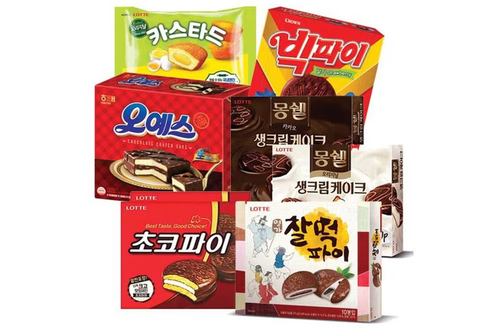

오예스·초코파이
해태 오예스(사각 케이크)와 오리온 초코파이(원형·마시멜로) — 초코 코팅 파이 계열.
오예스(해태)는 사각 소프트 케이크에 크림을 넣고 초코로 코팅한 파이입니다. 초코파이(오리온)는 원형 케이크 사이에 마시멜로를 넣고 초코로 입힌 제품으로, 둘은 모양·속이 다릅니다.
편의점 낱개부터 마트 박스까지 있습니다. 여름철 초콜릿 코팅이 녹을 수 있으니 시원하게 보관하세요.
오예스(해태)는 사각 소프트 케이크에 크림을 넣고 초코로 코팅한 파이입니다. 초코파이(오리온)는 원형 케이크 사이에 마시멜로를 넣고 초코로 입힌 제품으로, 둘은 모양·속이 다릅니다.
편의점 낱개부터 마트 박스까지 있습니다. 여름철 초콜릿 코팅이 녹을 수 있으니 시원하게 보관하세요.
사는 팁
구매 팁 박스 세트가 선물용으로 보기 좋습니다. 사각(오예스)과 원형(초코파이) 브랜드를 구분해 고르세요.